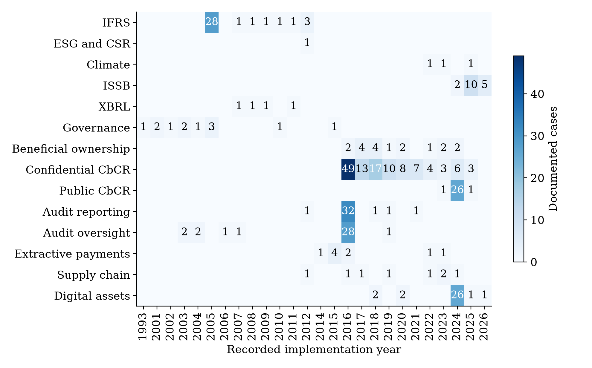
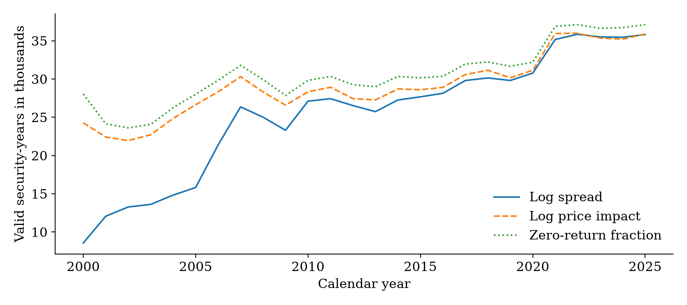
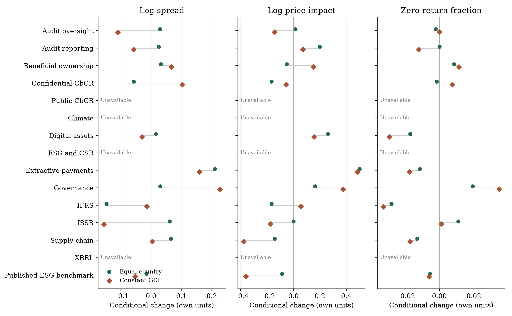
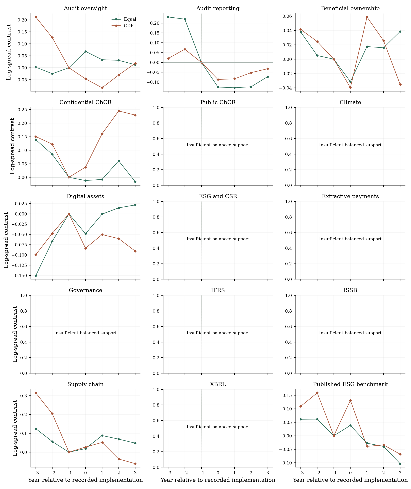
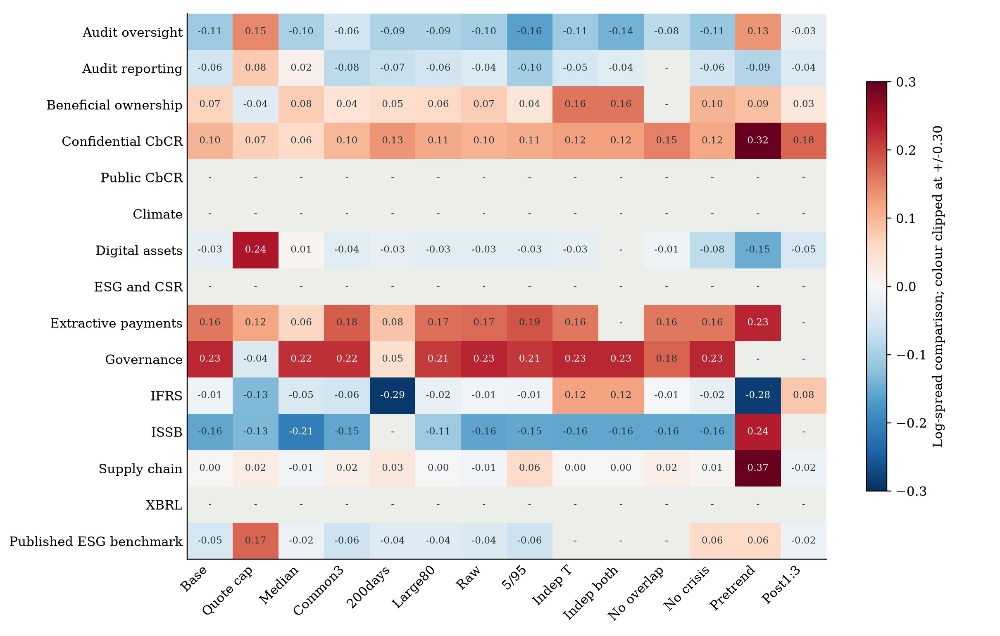
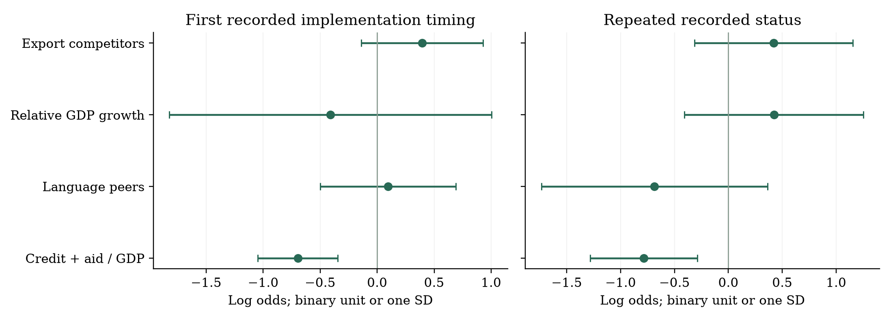

Country weighting schemes
GDP, PPP, sampled market size and quote counts, compared with equal-country and matched-support baselines.
GLOBAL CAPITAL MARKETS / EXPANDED EMPIRICAL DRAFT
Fourteen policy families. Two connected questions: how liquidity changes around implementation, and how regulation spreads across countries.
The expanded panel does not support one common liquidity effect. Conditional comparisons are available for ten families; their signs differ across policies and outcomes.
GDP weighting attenuates the negative IFRS spread comparison and reverses the confidential-CbCR sign. New JIBS-inspired tests measure trade competition, relative foreign success, emulation proxies and financial dependence. None of the 442 stable new coefficients passes correction across the full matrix; the financial-dependence association passes only a narrower primary family.
These are descriptive comparisons conditional on documented cases. Incomplete treatment histories, firm eligibility and reporting dates prevent a global causal interpretation. Missing policy records are not classified as untreated countries.
GDP, PPP, sampled market size and quote counts, compared with equal-country and matched-support baselines.
2,314 supported descriptive comparisons. Additional balanced profiles and exploratory income splits are released separately.
All 442 stable new focal coefficients are included in the Holm family, with unsupported and unstable fits retained.
The register spans financial reporting, sustainability, ownership, taxes, governance, audit and sector-specific obligations. Legal audiences and implementation dates differ across families; all fourteen inventories remain incomplete.
Timing in the current case register. This is not a complete global adoption census.

| Policy family | Dated cases | Independent cases | Proxy records | Future schedules |
|---|---|---|---|---|
| IFRS | 36 | 11 | 0 | 0 |
| ESG and CSR | 1 | 1 | 39 | 0 |
| Climate | 3 | 3 | 0 | 0 |
| ISSB | 17 | 17 | 0 | 6 |
| XBRL | 4 | 4 | 0 | 0 |
| Governance | 12 | 12 | 0 | 0 |
| Beneficial ownership | 18 | 12 | 0 | 0 |
| Confidential CbCR | 120 | 93 | 0 | 0 |
| Public CbCR | 28 | 1 | 0 | 0 |
| Audit reporting | 36 | 9 | 0 | 0 |
| Audit oversight | 35 | 7 | 0 | 0 |
| Extractive payments | 9 | 4 | 0 | 0 |
| Supply chain | 8 | 8 | 0 | 1 |
| Digital assets | 32 | 4 | 0 | 0 |
Dated cases are country-family implementations in the current source register, not a complete global adoption census. Independent cases follow the recorded national-choice flag. Proxy and future-schedule records are excluded from the dated-case estimates. Coordinated reference dates and other events are separately retained in the source CSV. All fourteen families have incomplete-census flags.
Calendar years 2000–2025. The incomplete 2026 data are excluded.

| Outcome | N | Mean | SD | Median | P95 |
|---|---|---|---|---|---|
| spread | 662,316 | 0.016 | 0.024 | 0.006 | 0.061 |
| impact | 763,729 | 123.846 | 404.371 | 4.754 | 657.203 |
| zero fraction | 795,229 | 0.119 | 0.153 | 0.064 | 0.400 |
| log spread | 662,316 | -5.074 | 1.436 | -5.047 | -2.803 |
| log impact | 755,877 | 1.516 | 3.079 | 1.603 | 6.500 |
Distributions are outcome-specific after annual screens. Spread and price impact are winsorized within year at 1 and 99 percent. Price impact uses decimal returns and USD trading value with the reference-paper rescaling. Zero fraction uses observed valid returns, not an independently audited exchange-calendar denominator. Raw quote identifiers are the unit; no complete historical issuer consolidation is claimed.
Annual median of daily 2(ask − bid)/(ask + bid). At least 120 valid days; positive spreads are logged.
662,316 log-spread observationsAnnual median of |decimal return| / USD trading value × 10⁸. The level follows the supplied appendix convention; original-code units remain unverified.
755,877 log-impact observationsZero reported returns / observed valid-return days, with at least 120 observations and price variation. This is not an audited trading-calendar denominator.
795,229 observationsSpread and impact are winsorized by year at 1% and 99%. There are 636,960 observations with all three outcomes. Pairwise correlations: log spread/log impact 0.819; log spread/zero fraction 0.568; log impact/zero fraction 0.386. Correlation CSV.
All 441 expanded regulation-event records are now available as individual JSONs and a master register, with fourteen family indices. The 51 inherited ESG document codings are kept separately. Records include implementations, amendments, proxies and other events; they are not a count of unique statutes or a complete global census.
11 events have only a saved text derivative or partial excerpt; 18 lack readable source content. OCR diagnostics flag 51 pages for review. Availability of text does not independently verify legal dates, eligibility or compliance. The 359-case policy sample is unchanged. The expanded analyses below add weighting, robustness and mechanism tests without promoting legal verification status.
Loading the regulation catalogue…
| Jurisdiction / family | Mandate / event | Recorded date | Source evidence | Record |
|---|
| Family | Event records | Saved source and text | Derivative or excerpt only | No readable source |
|---|---|---|---|---|
| IFRS | 37 | 37 | 0 | 0 |
| XBRL | 4 | 4 | 0 | 0 |
| Climate | 3 | 2 | 0 | 1 |
| ESG and CSR | 41 | 40 | 0 | 1 |
| Confidential CbCR | 120 | 120 | 0 | 0 |
| Governance | 14 | 12 | 0 | 2 |
| Beneficial ownership | 24 | 17 | 1 | 6 |
| Public CbCR | 44 | 40 | 1 | 3 |
| Audit reporting | 38 | 34 | 2 | 2 |
| Audit oversight | 38 | 36 | 1 | 1 |
| Extractive payments | 10 | 8 | 0 | 2 |
| Supply chain | 11 | 8 | 3 | 0 |
| Digital assets | 33 | 30 | 3 | 0 |
| ISSB | 24 | 24 | 0 | 0 |
Source preservation audit on18 October 2026. The 441 records include 359 dated estimation cases and other event types; they are not 441 unique statutes. Saved source and text includes original or linked official documents and 39 author-repository-backed published proxies. Partial excerpts are not complete archived originals. No-readable-source includes inaccessible, unreadable and metadata-only captures. Counts are event-weighted: many events can refer to one source. All fourteen policy histories remain incomplete.
The local archive preserves original response bytes, saved PDFs and legacy documents using SHA-256 object names. It records original locations, source URLs and fragments, retrieval outcomes, linked attachments and relocated official copies. Text files and page JSONs retain native extraction, OCR text, requested languages, confidence diagnostics and links to rendered page images. Searchable OCR derivatives are separate from original files.
The pass examined 4,593 PDF pages and attempted OCR on 206 page images. An image-ink heuristic identifies 33 likely blank images; 51 nonblank or low-confidence pages require human review. Blank-page heuristics and OCR do not establish translation or legal accuracy. All 51 inherited document records have saved files and text, but their historical codings remain unreconciled with the expanded event register.
The public downloads contain event JSONs, source metadata and official-source links. The original document corpus, extracted full text and OCR outputs are retained in policy-diffusion/11-regulation-source-register in the local project. An excerpt, catalogue entry or failed response is explicitly distinguished from an archived source file.
The chart below presents the primary g+1 versus g−1 comparisons. Negative values indicate a relative decline in the illiquidity measure. The horizontal lines show sensitivity to deleting one recorded policy-assignment cluster.
INTERACTIVE VIEW OF TABLE 3
Point comparison Cluster-deletion sensitivity range — Insufficient support
Ranges are not confidence intervals. Deleting a cluster can change supported cohorts, so a range need not contain the original point comparison. No liquidity p-values or confidence intervals are reported. Full numerical values and support remain available in the table and CSV.
| Family | Outcome | Change | Treated countries | Cohorts | Policy clusters | Cluster deletion range |
|---|---|---|---|---|---|---|
| IFRS | Log spread | -0.147 | 20 | 5 | 12 | -0.293 to 0.011 |
| IFRS | Log impact | -0.167 | 21 | 5 | 12 | -0.297 to 0.128 |
| IFRS | Zero fraction | -0.028 | 22 | 5 | 12 | -0.032 to -0.023 |
| ESG and CSR | Log spread | Not estimated | - | - | - | - |
| ESG and CSR | Log impact | Not estimated | - | - | - | - |
| ESG and CSR | Zero fraction | Not estimated | - | - | - | - |
| Climate | Log spread | Not estimated | - | - | - | - |
| Climate | Log impact | Not estimated | - | - | - | - |
| Climate | Zero fraction | Not estimated | - | - | - | - |
| ISSB | Log spread | 0.061 | 1 | 1 | 6 | -0.024 to 0.147 |
| ISSB | Log impact | -0.001 | 1 | 1 | 6 | -0.151 to 0.075 |
| ISSB | Zero fraction | 0.011 | 1 | 1 | 6 | 0.009 to 0.014 |
| XBRL | Log spread | Not estimated | - | - | - | - |
| XBRL | Log impact | Not estimated | - | - | - | - |
| XBRL | Zero fraction | Not estimated | - | - | - | - |
| Governance | Log spread | 0.030 | 5 | 3 | 10 | -0.030 to 0.260 |
| Governance | Log impact | 0.162 | 5 | 3 | 11 | 0.034 to 0.341 |
| Governance | Zero fraction | 0.019 | 5 | 3 | 11 | 0.014 to 0.028 |
| Beneficial ownership | Log spread | 0.032 | 11 | 5 | 10 | -0.007 to 0.091 |
| Beneficial ownership | Log impact | -0.052 | 11 | 5 | 10 | -0.143 to 0.052 |
| Beneficial ownership | Zero fraction | 0.008 | 11 | 5 | 11 | 0.004 to 0.013 |
| Confidential CbCR | Log spread | -0.057 | 42 | 4 | 33 | -0.101 to -0.028 |
| Confidential CbCR | Log impact | -0.166 | 42 | 4 | 33 | -0.233 to -0.103 |
| Confidential CbCR | Zero fraction | -0.002 | 43 | 4 | 35 | -0.008 to 0.003 |
| Public CbCR | Log spread | Not estimated | - | - | - | - |
| Public CbCR | Log impact | Not estimated | - | - | - | - |
| Public CbCR | Zero fraction | Not estimated | - | - | - | - |
| Audit reporting | Log spread | 0.025 | 20 | 2 | 10 | -0.112 to 0.038 |
| Audit reporting | Log impact | 0.199 | 20 | 2 | 10 | 0.183 to 0.488 |
| Audit reporting | Zero fraction | 0.000 | 20 | 2 | 10 | -0.012 to 0.005 |
| Audit oversight | Log spread | 0.029 | 4 | 3 | 6 | -0.100 to 0.103 |
| Audit oversight | Log impact | 0.014 | 6 | 4 | 8 | -0.195 to 0.126 |
| Audit oversight | Zero fraction | -0.002 | 6 | 4 | 8 | -0.016 to 0.002 |
| Extractive payments | Log spread | 0.210 | 1 | 1 | 4 | 0.219 to 0.229 |
| Extractive payments | Log impact | 0.499 | 1 | 1 | 4 | 0.505 to 0.522 |
| Extractive payments | Zero fraction | -0.011 | 1 | 1 | 4 | -0.011 to -0.009 |
| Supply chain | Log spread | 0.066 | 4 | 4 | 8 | 0.028 to 0.095 |
| Supply chain | Log impact | -0.143 | 4 | 4 | 8 | -0.225 to -0.039 |
| Supply chain | Zero fraction | -0.013 | 4 | 4 | 8 | -0.018 to -0.009 |
| Digital assets | Log spread | 0.016 | 2 | 2 | 4 | -0.002 to 0.045 |
| Digital assets | Log impact | 0.260 | 2 | 2 | 4 | 0.015 to 0.526 |
| Digital assets | Zero fraction | -0.017 | 2 | 2 | 4 | -0.024 to -0.011 |
Outcome year g+1 versus g-1, balancing securities within each country and comparison. Later recorded cases must implement after the outcome year. Each country requires at least 30 balanced securities and each cohort at least three control countries. Cohorts are weighted by contributing treated-country counts. Estimates are log points for spread/impact and fractions for zero returns. The range deletes one recorded assignment cluster at a time and recalculates supported comparisons; it is a sensitivity range, not a confidence interval. Cohort composition can change across deletions. Formal liquidity-effect inference is withheld. Detailed country cells and deletion support are in the CSV release.
The −0.147 log-spread comparison corresponds to a 13.7% relative geometric spread decline, using exp(β) − 1. The deletion range crosses zero (−0.293 to 0.011).
The −0.057 spread comparison corresponds to a 5.6% relative decline. Because reporting is primarily to tax authorities, this association cannot establish a direct public-information channel.
Balance the same quote identifiers within each country between g−1 and the outcome year. Require at least 30 balanced securities in each country and three later-case control countries in each supported cohort. Controls must have a recorded implementation after both g and the outcome year.
Compute equal-country changes within each cohort; weight supported cohort comparisons by the number of contributing treated countries. Missing country-family histories do not create a never-treated group. Year g can denote reporting-period starts, legal application dates, establishment or deadlines, rather than a common first public filing date.
These comparisons omit full firm-level eligibility, fiscal alignment, accounting and analyst controls. Assignment-cluster deletions quantify sensitivity. They do not supply causal identification or formal sampling inference.
This exercise uses the supplied Krueger et al. (2023) sample of 35 treated and 30 control countries, with market outcomes restricted to 2002–2020. Its coding is kept separate from the expanded dated-case register.
| Outcome | Change | Treated countries | Cohorts | Assignment cluster deletion range |
|---|---|---|---|---|
| Log spread | -0.016 | 27 | 12 | -0.085 to 0.019 |
| Log impact | -0.087 | 29 | 14 | -0.148 to -0.040 |
| Zero fraction | -0.006 | 29 | 14 | -0.009 to -0.002 |
Source sample: supplied Krueger 2023 Table 1, PDF 49-50. Published 35 adopters and 30 never-coded countries, with calendar market outcomes restricted to2002-2020. France lacks the required baseline within this restricted market window. Balanced-security g+1 versus g-1 comparisons use later/never-coded controls,30 securities per country and 3 control countries per cohort. Known NFRD countries share an assignment cluster. The range is a deletion sensitivity, not a confidence interval. No full accounting controls, fiscal alignment or source analyst-screened sample are reproduced. The benchmark is separate from the dated-case estimates.
GDP weighting is informative because it changes which countries drive the comparison. It also changes some conclusions. These are conditional market comparisons; economic size does not resolve treatment timing, eligibility or incomplete policy histories.
Equal-country to constant-GDP weighting. The negative point comparison becomes much smaller; the GDP-weighted cluster-deletion range crosses zero.
The sign reverses with constant-GDP weights. It would be misleading to describe this as a robust liquidity improvement. GDP-matched equal estimates help distinguish weighting from lost coverage.
ALL 3,330 WEIGHTING / ROBUSTNESS CELLS
Loading aggregate results…
| Family | Estimate | Matched equal | Treated countries | Effective treated N | Largest weight | Cluster-deletion range |
|---|
2,314 of 3,330 cells have descriptive estimates; the rest are unsupported or inapplicable. The cells are related analyses, not independent experiments. All negative, positive, null and unavailable results are retained. Ranges are sensitivity diagnostics, not confidence intervals. Log outcomes use log units; zero returns and volatility use their own fraction/decimal units. Additional outcomes are tested under baseline weights; the robustness matrix covers the three primary proxies and PC1. A combination outside that matrix is labelled unplanned.
| Family | Equal | GDP-matched equal | Constant GDP | Market cap | GDP effective N | Largest GDP weight % |
|---|---|---|---|---|---|---|
| Audit oversight | 0.029 | 0.029 | -0.109 | -0.077 | 1.5 | 80.1 |
| Audit reporting | 0.025 | 0.025 | -0.058 | -0.066 | 9.3 | 19.3 |
| Beneficial ownership | 0.032 | 0.032 | 0.067 | 0.100 | 7.1 | 21.4 |
| Confidential CbCR | -0.057 | -0.057 | 0.103 | 0.115 | 8.6 | 26.9 |
| Public CbCR | - | - | - | - | - | - |
| Climate | - | - | - | - | - | - |
| Digital assets | 0.016 | 0.016 | -0.030 | -0.027 | 2.0 | 54.3 |
| ESG and CSR | - | - | - | - | - | - |
| Extractive payments | 0.210 | 0.210 | 0.159 | 0.157 | 1.0 | 100.0 |
| Governance | 0.030 | 0.030 | 0.226 | 0.254 | 2.4 | 59.2 |
| IFRS | -0.147 | -0.147 | -0.014 | -0.181 | 9.9 | 17.2 |
| ISSB | 0.061 | 0.104 | -0.155 | -0.096 | 1.0 | 100.0 |
| Supply chain | 0.066 | 0.066 | 0.004 | 0.028 | 1.9 | 70.7 |
| XBRL | - | - | - | - | - | - |
| Published ESG benchmark | -0.016 | -0.012 | -0.052 | -0.104 | 9.8 | 22.9 |
Year g+1 versus g-1. GDP and market-cap weights are fixed at g-1, normalized in each cohort arm; cohorts receive treated weight mass. GDP-matched equal uses the exact country/cohort cells with observed GDP but retains equal-country aggregation. Effective N=1/sum(squared treated-country weight shares); it is not a sampling degrees-of-freedom count. Market cap sums sampled quotes, not the full national market. A dash is unsupported. The published ESG benchmark remains separate. All six weighting schemes and three original outcomes are released in CSV.
| Family | PC1 equal | PC1 GDP | Trading/cap equal | Trading/cap GDP | Volatility equal | Volatility GDP |
|---|---|---|---|---|---|---|
| Audit oversight | 0.102 | -0.125 | -0.067 | 0.079 | -0.003 | -0.004 |
| Audit reporting | 0.057 | -0.094 | -0.207 | -0.139 | -0.000 | -0.000 |
| Beneficial ownership | 0.032 | 0.120 | -0.101 | -0.191 | -0.000 | -0.000 |
| Confidential CbCR | -0.083 | 0.086 | -0.013 | -0.191 | -0.001 | -0.003 |
| Public CbCR | - | - | - | - | - | - |
| Climate | - | - | - | - | - | - |
| Digital assets | 0.007 | -0.107 | -0.144 | -0.109 | 0.001 | -0.000 |
| ESG and CSR | - | - | - | - | - | - |
| Extractive payments | 0.220 | 0.161 | -0.107 | -0.077 | 0.002 | 0.001 |
| Governance | 0.085 | 0.298 | -0.113 | -0.105 | 0.002 | 0.005 |
| IFRS | -0.289 | -0.107 | 0.221 | 0.217 | 0.003 | 0.002 |
| ISSB | 0.073 | -0.129 | -0.506 | -0.538 | -0.009 | -0.009 |
| Supply chain | -0.024 | -0.138 | 0.087 | 0.100 | 0.001 | -0.002 |
| XBRL | - | - | - | - | - | - |
| Published ESG benchmark | -0.061 | -0.153 | -0.022 | 0.023 | -0.001 | -0.005 |
Each cell applies the baseline balanced-quote comparison. PC1 uses the original three proxies standardized on 57,097 complete 2000-2004 observations. Loadings are spread 0.651, impact 0.579 and zero returns 0.491; variance explained is 67.8 percent. Higher PC1 is more illiquid. This is a frozen retrospective measurement reference, not universally pretreatment. Trading/cap is log annual dollar traded value / annual median USD market cap; it is not exact share turnover. Volatility is daily-return SD, decimal units, with 120 valid days and price variation.
All fourteen families and the separate published ESG benchmark, with three original liquidity outcomes. Connecting lines show a change in weighting, not uncertainty.

The same quotes, countries and cohorts support every year from g−3 to g+3. Reference g−1; controls implement after g+3. These descriptive profiles do not establish parallel trends.

Fourteen separately applied configurations, with every family and the benchmark. Grey/dash cells are unavailable. Colour is clipped at ±0.30; annotations retain the estimates.

Following the conceptual distinctions in Koning et al. (2018), the study separates exposure to prior implementation from learning about prior implementers’ market experience. The current models concern the timing of documented independent cases, rather than global first-adoption hazards.
Portfolio-weighted exposure to partners with a documented implementation by t−1. At least 80% of observed holdings must be classified.
Prior implementers’ decline in mean log spread from t−2 to t−1. At least 80% of relevant partner weight requires a signal.
Logit with family-year effects, lagged domestic market controls and country-clustered standard errors.
| Family | Risk rows | Observed inputs | Identifying rows | Events | Exposure model |
|---|---|---|---|---|---|
| IFRS | 96 | 0 | 0 | 0 | Not estimated |
| ESG and CSR | 12 | 0 | 0 | 0 | Not estimated |
| Climate | 70 | 0 | 0 | 0 | Not estimated |
| ISSB | 298 | 0 | 0 | 0 | Not estimated |
| XBRL | 35 | 0 | 0 | 0 | Not estimated |
| Governance | 54 | 0 | 0 | 0 | Not estimated |
| Beneficial ownership | 242 | 29 | 0 | 0 | Not estimated |
| Confidential CbCR | 1752 | 448 | 61 | 31 | Fitted |
| Public CbCR | 24 | 0 | 0 | 0 | Not estimated |
| Audit reporting | 150 | 61 | 0 | 0 | Not estimated |
| Audit oversight | 46 | 16 | 9 | 3 | Not estimated |
| Extractive payments | 74 | 3 | 0 | 0 | Not estimated |
| Supply chain | 156 | 5 | 0 | 0 | Not estimated |
| Digital assets | 76 | 0 | 0 | 0 | Not estimated |
Risk rows belong to documented independent cases only. Observed-input rows meet the 80 percent portfolio classification rule and observed market-control requirements. Identifying rows also remove constant-outcome family-year strata. Estimates require at least 50 rows, 15 countries and 10 events. The learning model has its own signal-coverage attrition in the accompanying CSV. A non-estimated family can have zero rows because all dated focal cases are coordinated.
| Sample | Model | Term | Log odds | SE | Raw p | Rows / events |
|---|---|---|---|---|---|---|
| Confidential CbCR | exposure | exposure | 0.951 | 1.447 | 0.511 | 61 / 31 |
| Pooled supported cases | exposure | exposure | 1.478 | 1.592 | 0.353 | 70 / 34 |
| Confidential CbCR | Exposure and learning | Unstable | Withheld | Missing | - | 52 / 27 |
| Pooled supported cases | Exposure and learning | Unstable | Withheld | Missing | - | 59 / 29 |
Original portfolio-exposure exercise, retained for comparison with the new JIBS-inspired tests. Standardized logit coefficients with country-clustered SE. Controls are unclassified portfolio weight and observed lagged market variables; family-year effects included. Learning uses pre-focal market dates; publication lags and historical quote coverage remain unaudited. Extreme learning slopes and invalid SE are withheld. The pooled sample covers audit oversight and confidential CbCR. CSVs retain odds ratios, Holm p-values, samples and failed-fit diagnostics.
Exposure remains imprecise. Confidential CbCR: β = 0.951, SE = 1.447, p = 0.511. Pooled supported cases: β = 1.478, SE = 1.592, p = 0.353. Both Holm-adjusted p-values are 0.706. Standardized log-odds coefficients are not probability effects.
The pooled sample covers two families. It contains 61 confidential-CbCR rows (31 events) and nine audit-oversight rows (three events). It does not represent all fourteen families equally.
Learning estimates are withheld. Runtime warnings, extreme slopes and non-finite standard errors make both learning fits unstable despite numerical convergence flags. Those original portfolio models do not measure emulation or coercion. The JIBS-inspired extension below adds partial peer and financial-dependence tests; an ordered legal-status model remains unavailable.
Annual IMF outward portfolio positions are restricted to total portfolio assets, total-economy holder and counterpart sectors, and current ISO country pairs. The reconstructed input has 287,379 country-pair-years; 187 negative positions are excluded. Positions reported in millions are converted to USD. Observed country-allocated holdings form the denominator; it has not been reconciled independently to World totals.
Risk rows begin in 2001 and stop at the first recorded implementation or 2025. Recorded coordinated cases are excluded as focal events. Fixed family-year strata with constant outcomes do not identify logit slopes. Minimum support is 50 identifying rows, 15 countries and ten events, with observed focal variation.
Domestic controls are observed lagged log market capitalization, log USD trading value and median return volatility. No interpolation or forward/backward filling is used. A stable model must converge without warnings and have finite coefficients below the fixed absolute-coefficient threshold of 25. Portfolio release/revision lags and historical availability of the security universe remain unaudited.
Portfolio holdings measure financial exposure, not Koning et al.’s export-similarity competition construct. The observed foreign spread improvement is not an estimated causal benefit and does not subtract nonimplementer performance. One-year lags do not resolve endogenous networks or expected reforms.
Following Koning, Mertens and Roosenboom (2018), the expansion separates export competition, relative geographic success, peer emulation and financial dependence. First-event timing and repeated recorded status are estimated separately. Both condition on documented cases.
Financial dependence has a negative pooled timing coefficient (−0.696; raw p = 0.000226). It passes the narrower four-primary-coefficient Holm family (p = 0.000905), but not the full-matrix correction (p = 0.0995). This borrower/reporting-subset association does not establish policy-specific coercion. Export-competitor exposure, relative GDP-growth learning and language exposure are imprecise in the primary timing models.
| Mechanism | Koning et al. (2018) | Implemented measure and boundary |
|---|---|---|
| Competition | Adoption fraction among five countries with the most similar export patterns; EIU risk peers as alternative | COW raw exports: five highest Pearson correlations with at least 20 common observed destinations; fixed 2000, fixed 2013 from 2014, and annual-lag to2015. At least 3/5 dated policy peers (4/5 sensitivity). Unknown peers and bounds retained. EIU data unavailable. |
| Learning | Among ten geographic neighbours, median GDP growth of prior adopters exceeds nonadopters; GDPpc alternative | Ten GeoDist capital-distance neighbours, priorG<=t-2 versus laterG>t-1, signals datedt-1; GDP/GDPpc, liquidity changes, and foreign benchmarked contrasts excluding the focal country/cluster from controls. Require 80 percent signal coverage per relevant group. |
| Emulation | Berry cultural/administrative composite; IFAC professional-advocacy membership alternative | Official-language and legal-origin peer adoption fractions plus fixed 2000 generic IGO similarity. Partial separate proxies: religion/composite and historical IFAC advocacy remain missing. |
| Coercion | IMF credits and foreign aid relative to GDP; positive-resource indicator alternative | Lagged IMFcredit+SDR/GDP, net aid/GDP, sum and complete-case positive indicator. SDR is not verified conditional lending; aid and credit measures do not establish pressure for any policy. |
All focal features precede the focal calendar year. Contemporary data vintages and historical country/quote availability are not audited as real-time information sets. Geographic/language snapshots and legal-origin classifications are disclosed. The original JIBS main logit includes time effects without domestic controls; our single-mechanism baseline follows that choice and adds controlled and same-sample LPM sensitivities. The supplied JIBS paper remains the authority for its original design.
| Design | Measure | Controls | Beta | SE | Raw p | All-test Holm p | Rows / countries |
|---|---|---|---|---|---|---|---|
| Timing | Export competitors | No | 0.395 | 0.266 | 0.144 | 1.000 | 206/57 |
| Timing | Export competitors | Yes | -0.051 | 0.328 | 0.877 | 1.000 | 191/54 |
| Timing | Relative GDP growth | No | -0.409 | 0.692 | 0.558 | 1.000 | 72/31 |
| Timing | Relative GDP growth | Yes | -0.754 | 0.859 | 0.388 | 1.000 | 67/29 |
| Timing | Language peers | No | 0.096 | 0.298 | 0.749 | 1.000 | 372/67 |
| Timing | Language peers | Yes | -0.128 | 0.301 | 0.672 | 1.000 | 312/54 |
| Timing | Credit + aid / GDP | No | -0.696 | 0.175 | 0.000 | 0.100 | 243/50 |
| Timing | Credit + aid / GDP | Yes | -0.698 | 0.351 | 0.053 | 1.000 | 228/47 |
| Status | Export competitors | No | 0.420 | 0.367 | 0.257 | 1.000 | 516/57 |
| Status | Export competitors | Yes | -0.262 | 0.388 | 0.503 | 1.000 | 488/54 |
| Status | Relative GDP growth | No | 0.423 | 0.416 | 0.313 | 1.000 | 256/63 |
| Status | Relative GDP growth | Yes | 0.264 | 0.431 | 0.544 | 1.000 | 233/59 |
| Status | Language peers | No | -0.686 | 0.525 | 0.196 | 1.000 | 992/67 |
| Status | Language peers | Yes | -0.867 | 0.612 | 0.162 | 1.000 | 877/55 |
| Status | Credit + aid / GDP | No | -0.785 | 0.247 | 0.003 | 1.000 | 505/50 |
| Status | Credit + aid / GDP | Yes | -0.774 | 0.384 | 0.050 | 1.000 | 472/47 |
Logit with family-year strata and country-cluster covariance; t reference countries-1df. Constant-outcome strata are removed. Continuous focal measures are standardized within the exact fitted sample; binary relative-growth learning remains 0/1. Controls: lagged log GDPpc, GDP growth and trade/GDP, plus peer-unknown coverage where relevant. Timing conditions on documented independent implementations; status is an absorbing recorded-date index, not a verified worldwide adoption census. Holm spans every 442 stable focal coefficient in the new logit/LPM matrix. Samples differ across rows; controlled changes cannot be attributed solely to controls. The full release includes exact row memberships, all families, combined models, LPM, benchmark sensitivities and failures.
Single-mechanism logits, without economic controls, with family-year strata and country-cluster covariance. Bars are nominal 95% intervals, not simultaneous intervals; samples differ across measures and designs.

Country-clustered logit and LPM models require 50 rows, 15 countries, 10 ones and 10 zeros, full-rank designs, convergence and valid standard errors. Constant-outcome family-year strata are removed. Controlled variants add lagged GDP per capita, GDP growth and trade/GDP. Every unsupported and unstable cell remains in the full CSV; exact estimation memberships remain in the local audit.
Export peers use raw COW flows and at least 20 common observed destinations. Main exposure requires 3 of 5 dated peers; missing histories stay unknown. Fixed-2000 peers enter from 2001; fixed-2013 from 2014; annual lagged trade stops at focal 2015. Learning compares prior and later documented cases among ten geographic neighbours, using signals no later than t−1. Historical data vintages and quote survivorship remain unaudited.
Language, legal-origin and generic IGO exposures are partial emulation proxies; they do not reproduce the full Berry composite or IFAC advocacy. IMF credit includes SDR allocations, aid reporting is incomplete, and neither series establishes policy-linked conditionality. The comparable ordered legal-status scale, EIU risk peers and verified loan conditions remain unavailable.
Additional calendar horizons are shown with their actual support. Issuer-specific heterogeneity, cleaner treatment timing and the unobserved parts of the diffusion mechanisms require further verified data. Balanced profiles and exploratory income splits are added in the expanded release.
| Family | g-2 | g | g+1 | g+2 |
|---|---|---|---|---|
| IFRS | 0.098 | -0.156 | -0.147 | -0.074 |
| ESG and CSR | - | - | - | - |
| Climate | - | - | - | - |
| ISSB | -0.023 | -0.076 | 0.061 | - |
| XBRL | - | -0.065 | - | - |
| Governance | -0.029 | 0.056 | 0.030 | -0.198 |
| Beneficial ownership | 0.021 | -0.003 | 0.032 | 0.025 |
| Confidential CbCR | 0.086 | 0.006 | -0.057 | -0.034 |
| Public CbCR | 0.029 | -0.187 | - | - |
| Audit reporting | -0.067 | 0.050 | 0.025 | -0.099 |
| Audit oversight | -0.008 | 0.069 | 0.029 | 0.059 |
| Extractive payments | -0.054 | 0.055 | 0.210 | - |
| Supply chain | 0.028 | -0.026 | 0.066 | 0.053 |
| Digital assets | -0.069 | -0.030 | 0.016 | 0.042 |
Every column compares its indicated outcome year with g-1. Different columns can use different countries/cohorts and balanced securities; this is not a balanced event study. Negative values are relative improvements in log spread. A dash indicates insufficient support under the fixed rules. The g+1 column is primary; pre-period cells do not verify parallel trends.
| Test | Current status | Required extension |
|---|---|---|
| Public versus confidential channel | Classified in policy register | Eligible firms, first public availability and policy-specific effects |
| Issuer and compliance heterogeneity | Design specified | Audited family-specific issuer and bindingness history |
| Formal and informal enforcement | Design specified | Predetermined measures relevant to each family |
| Voluntary firm disclosure | Not estimated | Guidance or comparable actual disclosure data |
| Clean cohort and event study | Balanced descriptive profiles completed | Verified treatment histories, balanced eligibility, anticipation and simultaneous inference |
| Adoption-trigger diagnostics | Not estimated | Family-relevant attention and incident series |
| Competition | Export-competitor tests completed | EIU risk peers unavailable; global histories incomplete |
| Learning | GDP/GDPpc and liquidity proxies tested | Historical information availability; timing liquidity samples remain sparse |
| Emulation | Language/legal/IGO proxies tested | Full cultural composite and historical IFAC advocacy unavailable |
| Coercion | Financial-dependence proxies tested | Verified policy-specific lending conditions unavailable |
| Ordinal adoption status | Not estimated | Comparable ordered legal status and proportional-odds diagnostics |
Status describes this release. A planned or unavailable test is not reported as completed. Detailed source-paper methods, robustness checks and writing guidance are in reference-papers-and-expanded-study.json.
The horizon columns can use different countries, cohorts and balanced securities. They are not a balanced event study, and the pre-period comparisons do not establish parallel trends.
| Configuration | Cells | Supported | Negative | Positive | Families |
|---|---|---|---|---|---|
| baseline | 42 | 30 | 15 | 15 | 10 |
| cap weighted quotes | 42 | 30 | 13 | 17 | 10 |
| median quote change | 42 | 30 | 14 | 16 | 10 |
| common three outcome sample | 42 | 30 | 15 | 15 | 10 |
| at least 200 days | 42 | 27 | 12 | 15 | 9 |
| exclude bottom cap quintile | 42 | 30 | 14 | 16 | 10 |
| unwinsorized proxies | 42 | 30 | 17 | 13 | 10 |
| five ninetyfive winsorized proxies | 42 | 30 | 16 | 14 | 10 |
| independent treated cases | 42 | 30 | 15 | 15 | 10 |
| independent cases both arms | 42 | 24 | 12 | 12 | 8 |
| exclude known other family events in window | 42 | 24 | 11 | 13 | 8 |
| exclude crisis windows 2008 2009 2020 2021 | 42 | 30 | 14 | 16 | 10 |
| pretrend extrapolation adjustment | 42 | 29 | 11 | 18 | 10 |
| post years 1 to3 average | 42 | 23 | 11 | 12 | 8 |
Counts refer to related descriptive cells across the original three outcomes and fourteen families; they are not independent experiments. The full grid retains each cell including failures. Configurations are applied separately, without searching combinations. PC1, equal-country counterparts, matched baselines and published ESG benchmark are in the released full matrix. Figure 5 shows GDP-weighted log-spread values for every family and configuration.
| Workstream | Current status | Evidence or remaining requirement |
|---|---|---|
| GDP and market-size weights | Completed | Six country weighting schemes; matched support, concentration and cluster deletions. |
| Factor, secondary outcomes and robustness | Completed | PC1, traded value/cap, volatility;14 configurations; balanced seven-year profiles; income split. |
| JIBS competition and learning | Implemented with disclosed coverage | Five export peers; geographic relative GDP/GDPpc growth; lagged liquidity and foreign benchmark signals. Sparse learning cells remain unsupported. |
| Emulation and financial dependence | Partial observable proxies completed | Language/legal/IGO and credit/aid measures. Full Berry composite, IFAC advocacy, EIU and verified loan conditions unavailable. |
| Firm-level causal design | Unfinished: required inputs missing | First mandatory filing dates, issuer eligibility, fiscal alignment, accounting/analyst controls, untreated histories and historical quote universe. |
| Policy-source verification | Unfinished: retained gap register | 18 events lack readable source,11 excerpts only;51 OCR pages require review. Saving/OCR does not verify legal coding. |
| Other source-paper tests | Unfinished: required inputs missing | Policy-specific enforcement, voluntary guidance, triggers, IFAC histories and ordered legal status. No synthetic replacements. |
This update completes feasible tests with the observed inputs and discloses all failures. It does not mark unavailable data, legal verification or source-review tasks complete. Original security/portfolio rows and source-document corpus remain local. All 441 expanded events and 51 inherited document codings remain in the source-linked JSON register.
This companion reproduces all six figures, both displayed equations and all fifteen tables from the latest 29-page draft. The interactive comparison chart is an additional view of the underlying results.
We examine stock liquidity and international implementation timing across fourteen disclosure-related regulatory families. The register contains 359 documented country-family implementations matched to1,055,142 annual quote observations across 90 jurisdictions during 2000-2025. Equal-country and GDP-weighted comparisons differ materially: the IFRS spread comparison shrinks from-13.7 to-1.4 percent, and confidential country-by-country reporting reverses from-5.6 to+10.8 percent. We add a frozen illiquidity factor, trading-activity and volatility outcomes, fourteen robustness configurations, balanced event profiles and observable income splits. These comparisons remain descriptive conditional on documented cases. Following Koning et al. (2018), we separately measure export competition, relative geographic success, peer emulation and financial dependence. The fixed regression matrix yields 442 stable focal coefficients;77 have raw p below 0.05, but none survives Holm correction across the full matrix. Financial dependence is negatively associated with recorded timing and survives only the narrower four-primary-coefficient correction. Incomplete legal histories, issuer eligibility and reporting dates prevent a causal capital-market or diffusion conclusion. All unsupported and unstable tests are disclosed.
Investors face an expanding set of rules governing the information that companies provide about their financial position, sustainability risks, ownership, taxes and business relationships. These rules can alter both the content of corporate information and the institutions through which it reaches markets. Their capital market consequences need not be uniform. A public financial report, a confidential submission to a tax authority and the creation of an audit oversight body change different parts of the information environment. Understanding these differences requires a common set of market outcomes together with a careful account of what each regulation requires.
We study disclosure regulation in two parts. The first examines stock liquidity around documented policy implementations across fourteen regulatory families. The second examines the timing of independent national implementations and the information that countries could have obtained from prior implementations elsewhere. Linking these questions makes it possible to distinguish the market consequences of regulation from the international processes through which regulation spreads. A policy may be attractive because connected countries have adopted it, because their markets have improved, or because its adoption conveys legitimacy. These explanations require different empirical measures.
Our outcome analysis follows the measurement logic of Krueger, Sautner, Tang and Zhong (2023). We construct annual quoted spreads, price impact and the fraction of zero-return days from daily equity records. Their study shows how a global disclosure sample can connect average liquidity estimates to differences in implementation, enforcement and existing information provision. We extend the research setting beyond ESG reporting, while preserving the distinction between a policy's legal existence and the population of firms to which it applies. The current draft reports calendar-year market evidence. It does not reproduce their fiscal-year firm panel or their full accounting and analyst control set.
Our diffusion analysis draws on Koning, Mertens and Roosenboom (2018). We distinguish trade competition, relative foreign success, peer emulation and financial dependence. These constructs require separate networks and signals. We first retain the original portfolio-exposure exercise, then construct the export and geographic measures used in their JIBS design and partial emulation/dependence proxies. No observed network association is treated as a causal diffusion mechanism.
The expanded setting also exposes limits that can remain less visible in a single-policy study. Several regulatory families share legal acts and coordinated implementation dates. Some require public disclosure, whereas others provide information primarily to regulators. Several apply only to large multinational groups, extractive companies or digital-asset activities. Moreover, an incomplete inventory of policies cannot establish that an unrecorded country was untreated. Our analysis retains those distinctions rather than increasing the apparent sample by assigning missing histories to the control group.
The expanded tests show why weighting matters. The IFRS spread comparison is negative under equal-country and GDP weights, but its magnitude falls sharply with GDP weighting. Confidential country-by-country reporting reverses sign. Audit-reporting comparisons become negative with GDP weighting, while several other families remain positive or lack support. The JIBS-inspired models produce several raw associations, including financial dependence and recorded timing, but none survives correction across the full new test matrix.
This draft contributes a common measurement framework, a source-linked policy register and initial empirical comparisons. It also establishes which additional data are needed for a credible causal analysis. The liquidity comparisons condition on documented policy cases and use later recorded implementations as controls where support exists. The implementation-timing models condition on documented independent national cases. These estimates describe the available evidence; neither design presently identifies the unconditional effect of global regulatory adoption. The distinction is consequential for both the interpretation of results and the next stage of the paper.
Disclosure can improve secondary-market liquidity when it reduces differences in information among traders. Diamond and Verrecchia (1991) explain how public information can affect liquidity, participation and the cost of capital. More accessible information about firm fundamentals can lower adverse selection, attract participation and reduce transaction costs. Financial reporting, structured filing formats and public nonfinancial reports may operate through this channel. Yet additional disclosure can be costly to produce or process. Standardized requirements may provide little new information for firms that already disclose extensively, and superficially compliant reports may change neither investor beliefs nor trading. The sign and magnitude of the liquidity response are therefore empirical questions.
Our first prediction is that rules producing incremental public information for eligible firms are followed by lower quoted spreads and price impact. A lower fraction of zero-return days provides complementary evidence of improved trading activity. This prediction is conditional on actual information reaching investors. It does not imply that confidential country-by-country tax reporting or oversight-body establishment should have the same effect as a public reporting mandate. An association for those families could reflect indirect enforcement, overlapping reforms or wider changes in the market.
A second prediction concerns implementation. Requirements with broad relevant coverage, credible enforcement and clear reporting obligations should be more likely to change the information environment. Issuing authority and the possibility of explaining noncompliance can help describe those differences, as in Krueger et al. However, the concepts must be coded within each family. Environmental norms may be pertinent to ESG reporting but need not measure enforcement of beneficial ownership registration or digital-asset rules. The expanded paper should test economically relevant interactions rather than repeat identical moderator variables across unrelated regulations.
For diffusion, competition predicts that a country's regulatory choices respond to choices by countries competing for economic resources. Koning et al. measure such competition through similarity in export patterns and, alternatively, membership in the same investment-risk class. Our current portfolio network instead measures financial exposure. Holdings in a prior implementer can transmit information or reflect common investment opportunities, but they do not by themselves establish that two destinations compete. We therefore describe the resulting coefficient as an exposure association.
Learning predicts that the experience of earlier implementers influences later choices. A liquidity-based success signal connects the two parts of our study more closely than a general measure of economic growth. However, an observed decline in spreads may arise from a market cycle, changing securities in the sample or another reform. The present signal captures information that could have been visible abroad. A later design will estimate foreign policy benefits using historical data only, separate them from common shocks, and prevent information from the focal country from entering its own signal.
Emulation and coercion remain distinct predictions. Emulation concerns acceptance among relevant peers or professional communities, independently of demonstrated economic success. Coercion concerns pressure from actors with authority or resources, including explicit policy conditions. Shared-language exposure can be a candidate peer measure, while international lending can be a candidate dependence measure. Neither constitutes a verified mechanism without family-specific validation. This draft therefore does not attach emulation or coercion labels to generic geographic proximity or to unverified credit variables.
The policy register groups capital-market-relevant rules into IFRS, ESG and CSR reporting, climate disclosure, ISSB-based reporting, XBRL filing, governance disclosure, beneficial ownership, confidential country-by-country reporting, public country-by-country reporting, expanded audit reporting, audit oversight, extractive-payment disclosure, supply-chain rules and digital-asset regulation. Table 1 separates dated implementations from published proxies, future schedules and coordinated reference records. These categories describe evidence and event type. They do not imply that all events have the same treatment intensity or economic content.
The accompanying regulation archive serializes all 441 event records into a master JSON register and one JSON file per event, with fourteen family indices. Each record preserves its original CSV fields, source URL, locator, date distinctions and verification status. These records include implementations, amendments, published proxies and other events; they are not a count of unique statutes. The separate inherited ESG register contains 51 document codings. They may overlap the expanded events and do not add verified implementation cases to the estimation sample.
The source archive contains 258 unique preserved files or responses linked to 151 recorded source URLs after removing fragments. SHA-256 hashes identify saved objects, while retrieval logs retain failed requests and relocated official documents. Of the 441 events, 373 have an original or linked official source with readable text and 39 published-proxy records have saved author repository files. Eleven records have only a saved text derivative or partial excerpt; eighteen lack readable source content, including metadata-only captures. All 51 inherited ESG document records have saved files and extracted text. Saving a response or reading an author workbook does not independently verify a legal date or establish a complete global policy history.
The extraction pass examined 4,593 PDF pages. Tesseract was run on 206 page images when native text was sparse or corrupted, including image-only sources. Original files, page-level text, requested OCR languages, word-confidence diagnostics and searchable derivatives are retained separately. An image-ink heuristic flags 33 likely blank images; 51 nonblank or low-confidence OCR pages require review. Extraction and archiving are reproducibility steps, rather than legal or translation verification. Table A4 reports source availability by family. No treatment coding or empirical estimate is revised by this archival pass.
The register is a collection of documented implementations rather than an exhaustive history of nonadoption. Every family retains an incomplete-census flag. The absence of a record consequently does not identify an untreated country. The first empirical comparisons use countries with dated records in the same family, retaining later cases as potential controls only before their recorded implementation. Earlier unrecorded obligations cannot be ruled out by that rule alone. We accordingly refer to first recorded implementation rather than verified first adoption throughout the empirical results.
Date meaning is equally important. The register contains reporting-period starts and ends, compliance deadlines, legal application dates and institutional establishment dates. A first fiscal year is not a first public filing date. The expanded study ultimately requires separate announcement, enactment, application, reporting and publication fields. The current calculations retain the register's event year and examine liquidity in calendar year g+1, relative to calendar year g-1. This convention is transparent and comparable across observed cases, but it is an approximation to information availability.
Two differences within the existing ESG records illustrate the importance of scope. The register contains an official Indian implementation record for 2012, while the supplied Krueger manuscript uses 2015 to represent the extension from the largest one hundred to the largest five hundred listed firms. The two dates answer different coverage questions. The inventory also includes literature-based ESG proxies that do not correspond exactly to the thirty-five-country estimation sample in the supplied manuscript. We keep those proxies out of the dated-implementation analysis. Their presence is not a substitute for a new legal audit.
The daily equity source consists of five Datastream Parquet collections. We use the complete calendar years 2000 through 2025 and exclude partial 2026 observations. The records provide quote identifiers, listing and company-country fields, prices, bid and ask quotes, local-currency total returns, trading volume in shares, and market capitalization. The raw collection remains on the external drive; the project contains links to it. All derived annual files and screening audits are stored separately from the raw data.
We select equity securities flagged as major securities and primary country quotes, require the quote identifier to equal the primary quote identifier, and match trading country to company country under the source's country-code type. We remove observations after available delisting dates and apply a limited name screen for funds, warrants, depositary receipts and preferred securities. This is not the complete historical-constituent and industry screen in Krueger et al. The sample retains inactive securities present in the source, but we cannot establish that the extract exhaustively covers every historical listing.
The raw files can contain several historical ISIN mappings for the same quote and trading date. Identical economic observations are collapsed using the quote identifier, date, country, price, quote, return, volume and market-capitalization fields. We do not count additional static identifiers as additional trading observations. If economic observations conflict at the same quote-date key, the key is excluded rather than selecting an arbitrary value. The yearly audit reports the remaining conflicts and checks recorded returns against changes in the total-return index. A boundary-window probe finds differences concentrated in Monday observations from several markets; unavailable local trading dates are a possible explanation. We retain vendor returns and leave full trading-calendar reconciliation open, rather than overwrite them with returns across observed-date gaps.
Daily prices below USD 0.10 are excluded. Returns above 200 percent and abnormal adjacent return reversals are removed following the thresholds described in Krueger et al. Daily quoted spreads require nonnegative bid and ask prices and an ask at least as large as the bid. Dollar trading value is the closing USD price times volume in shares; observations below USD 100 do not enter price impact. We infer active country trading dates from at least five selected securities with positive volume, allowing the trading week to differ across countries.
Annual spread is the median daily relative spread. Annual price impact is the median absolute decimal total return divided by USD trading value, rescaled to match the units described in the reference paper. Spread and impact are winsorized at the first and ninety-ninth percentiles within each year and enter the comparisons in logarithms. We require at least one hundred twenty valid daily observations for each measure. Price impact and zero-return fractions additionally require variation in closing prices.
The zero-return outcome divides zero-return days by observed valid-return days on the inferred country trading calendar. It does not reproduce a denominator from a separately audited exchange calendar. An audit of the separate LSEG ESG files locates 175,506 fiscal year-end dates for 15,592 Datastream codes. These cover a subset and still require a validated historical link to the quote panel. The inspected ESG field definitions do not provide the full assets, profitability, debt, analyst and guidance control set. These differences are recorded in the analysis JSON and prevent an exact replication claim. Table 2 reports coverage and distributions for the measures that are actually constructed.
The screened annual files contain 1,055,142 security-years for 99,100 distinct quote identifiers in 90 jurisdictions. Log spreads are available in 662,316 security-years, log price impact in 755,877, and the zero-return fraction in 795,229. The common three-outcome sample contains 636,960 observations. These counts describe the market-data build and are not the number of firms treated by a policy. Table 2 shows the corresponding distributions, while Figure 2 makes the time variation in coverage visible. The country comparisons further require thirty securities with a valid observation in both comparison years.
We begin with annual quoted spreads, price impact and zero-return fractions following the measurement logic of Krueger et al. (2023). Table 3 retains the initial equal-country comparisons. The follow-up fixes the same supporting quote identifiers within each country between g-1 and g+1, requires thirty paired quotes per country and at least three later-case controls per cohort, and compares equal-country results with alternative country weights. Missing histories do not supply never-treated observations.
GDP weights answer a different aggregation question from equal-country weights. We use current USD GDP, constant 2015 USD GDP and constant 2021 international-dollar PPP GDP measured at g-1. We also use baseline sampled-quote market capitalization and balanced-quote counts. We normalize weights separately in each cohort arm and aggregate cohorts by treated weight mass. Equal-country results on exactly the same eligible country/cohort cells distinguish lost GDP coverage from weighting changes. Economic size does not resolve endogenous timing, firm eligibility or concurrent reforms.
The IFRS log-spread comparison changes from -0.147 (-13.7%) to -0.014 (-1.4%) under constant-GDP weights. Confidential CbCR changes from -0.057 (-5.6%) to 0.103 (+10.8%). These reversals and attenuations demonstrate sensitivity to economic composition; they cannot establish a common policy benefit.
Audit reporting changes from a positive equal-country spread contrast to a negative GDP-weighted contrast. Its GDP-weighted cluster-deletion range remains below zero in the baseline. This is a descriptive candidate for further investigation, not formal evidence of a policy effect: coordinated cases, sample composition and unobserved overlapping changes can still drive it. Figure 3 and Table 4 show all families, including unsupported comparisons, rather than selecting the negative estimates.
We add a principal-component illiquidity index, log traded value relative to market capitalization and daily-return volatility. PC1 is estimated once on 57,097 complete observations during 2000-2004, with frozen standardization and loadings applied to all years. It explains 67.8 percent of reference covariance and increases with illiquidity. Some policies precede this calibration window, so it is a retrospective measurement reference. Table 5 reports the added outcomes. Traded value divided by median market cap is an activity ratio rather than exact share turnover.
The frozen follow-up plan specifies fourteen configurations: baseline, quote-cap weighting, median quote changes, common-three-outcome support,200-day availability, removal of the lowest pre-cap quintile, raw proxies,5/95 winsorization, independent treated cases, independent cases in both arms, known-other-family event exclusions, crisis-window exclusions, pretrend extrapolation and average post-years 1-3. We disclose all 3,330 planned weighting/robustness cells:2,314 are supported and 1,016 are unavailable or inapplicable. These are related analyses, not 3,330 independent experiments. No filters are combined opportunistically.
Figure 4 uses the same quotes, countries and cohorts observed at every year from g-3 through g+3, with later-case controls implementing after g+3 and g-1 as reference. The balanced profiles repair the varying-support limitation of AppendixA 1, but descriptive pre-period patterns do not establish parallel trends. Figure 5 and TableA 5 disclose the robustness grid. An additional, explicitly exploratory income split applies each pre-year median GDPpc threshold to both comparison arms; its full 180-cell table includes unsupported groups.
The separate published-ESG benchmark retains the supplied 35 treated and 30 never-coded countries only during 2002-2020. Its equal-country log-spread comparison is-0.016 and its constant-GDP comparison is-0.052. Current-USD GDP weighting produces a different sign, illustrating that vintage/currency composition and eligible support matter even in the reference sample. This is a calendar benchmark using published dates, not a fiscal-year replication of Krueger et al. Formal liquidity p-values are withheld; assignment-cluster deletion ranges remain sensitivity diagnostics, not confidence intervals.
The initial portfolio-exposure exercise is preserved in Tables 6-7. Its two stable exposure-only fits are imprecise; learning fits were unstable. Portfolio exposure is not the export-competition construct in Koning et al. (2018). The expansion therefore builds separate mechanism measures and reports their relation to the supplied JIBS design in Table 8.
For competition we select the five most correlated export-destination patterns using raw COW trade flows and at least twenty jointly observed destinations. Missing/negative flows are not converted to zero. Fixed 2000 peers are available from 2001; fixed 2013 peers enter only from 2014; annual lagged flows stop at2014 and therefore focal 2015. We calculate adoption shares only among documented dated peers, require at least three of five (four in a stricter sensitivity), and include unknown-peer coverage. The global adoption fraction remains bounded by the separately retained unknown-neighbour share.
For learning, the ten nearest geographic neighbours are selected independently of policy status. Earlier cases have recorded implementation by t-2; comparison cases implement after t-1. We compare median GDP growth, and GDPpc growth in an alternative, observed at t-1, requiring at least one measured earlier and later case and 80 percent signal coverage in each group. Liquidity-change versions use the same temporal rule. A further foreign-success proxy uses balanced g-1 to g+1 foreign contrasts available by t-1 and excludes the focal country and its assignment cluster from foreign controls. These remain observed conditional comparisons, not causal estimates of foreign policy success.
For emulation we use separate language, legal-origin and generic IGO peer measures. These do not reproduce the Berry cultural/administrative composite or policy-specific IFAC professional advocacy. Financial dependence uses lagged IMF credit including SDR allocations and net aid relative to GDP, separately and combined. Missing higher-income reporting is retained as missing; no observed loan condition is inferred from these financial stocks and flows.
We fit first recorded implementation timing among documented independent cases and a repeated absorbing recorded-status index for comparison with JIBS. The latter is an index built from recorded implementation dates, not an audited full legal history. Single-mechanism logits include family-year strata and peer-coverage terms. Controlled variants add lagged log GDPpc, GDP growth and trade/GDP. We also fit combined four-mechanism specifications and same-sample linear probability models. Constant-outcome strata are excluded; minimum support is50 rows,15 countries,10 ones and 10 zeros. Designs must be full rank and fits must converge without warnings or invalid standard errors.
The fixed matrix contains 1,190 designs and 2,992 focal-coefficient cells including LPM counterparts and unsupported fits. There are 442 stable focal coefficients across 412 models. Of these,77 have raw p below 0.05, but none passes Holm correction across all 442 estimable coefficients. These counts do not describe independent hypotheses. Failed and unsupported specifications, exact samples and model diagnostics are retained.
In the pooled timing baseline, the export-competitor coefficient is0.395 (raw p0.144), relative-GDP-growth learning is-0.409 (p0.558), language-peer exposure is0.096 (p0.749), and combined credit/aid dependence is-0.696 (p0.000226). The latter passes the separately identified four-primary-coefficient Holm family (p0.000905), but its all-test Holm p is0.0995 and its sign is negative. It cannot establish policy-specific coercion. The baseline samples range from 72 rows/31 countries for learning to372 rows/67 countries for language exposure. Sample changes across measures and controls constrain comparison.
Table 9 and Figure 6 contrast timing and recorded-status associations. The pooled benchmarked-liquidity-success status coefficient is negative, with raw p0.0041 and all-test Holm p1.000; its first-event timing counterpart lacks the fixed support. This distinction matters because accumulated status and the timing of an independent national decision ask different questions. The present evidence does not establish that foreign liquidity benefits caused regulatory diffusion. It identifies which mechanism measures can now be formed and where legal-history and source coverage still prevent a credible test.
The follow-up completes the feasible weighting, factor, balanced-profile and mechanism analyses using observed local/public inputs. TableA 6 separates those completed tasks from missing data and legal validation. All source-paper tables and writing/method guidance remain in the reference JSON, now linked to the expanded methods and results. Clear definitions, table-specific sample explanations and restrained interpretation follow the reference papers; their prose is not copied.
The main unresolved identification work is at the issuer-policy boundary: first mandatory filing dates, fiscal alignment, eligibility and compliance, firm accounting/analyst controls, enforcement and voluntary disclosure. Incomplete country-family histories prevent a verified worldwide untreated census or an ordered legal-status model. The current static quote universe does not establish survival-free historical selection.
Historical IFAC advocacy, EIU risk peers, the full Berry composite, verified lending conditions and adoption-trigger series remain unavailable. The source archive retains 18 events without readable material,11 supported only by extracts and 51 flagged OCR pages for human review. These counts are not silently upgraded by the empirical extension. The original files, legal records and all source gaps remain with the project.
Disclosure regulations differ in information audience, eligible firms and implementation structures. Expanded liquidity comparisons reflect those differences, but economic weighting can also change their sign and magnitude. IFRS attenuation and the confidential-CbCR reversal show why the paper cannot infer a common market benefit from negative equal-country coefficients. Audit reporting provides a negative GDP-weighted descriptive comparison that warrants source- and eligibility-specific investigation.
The JIBS framework helps separate trade competition, foreign success, peer emulation and financial dependence. New proxies make substantially more of that framework measurable, while the full test matrix yields no coefficient that survives the broad multiplicity correction. A negative financial-dependence timing association survives only the narrower primary family. Neither result identifies a diffusion mechanism. Firm eligibility, complete legal histories and historically available information are the remaining requirements for linking capital-market effects to subsequent policy decisions.
Detailed methodological comparisons use the supplied 2023 Krueger working-paper version and the 2018 Koning JIBS article. The later published Krueger article is distinguished from that supplied version.
Prepared from the 18 October 2026 expanded-policy-paper release. Public files contain the report, figures, manuscript and aggregate result tables. Quote-level Datastream data, raw portfolio records and the supplied literature PDFs are not included. The report is an expanded exploratory empirical draft. No causal market or diffusion effect is established.
Source PDF SHA-256: 4c6f23d7b142c9d5fb0eb6e8d9c9c54f0af954e1ff7167ade16ac9e1339e3efa
View public GitHub repository ↗